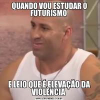

O que é o Futurismo?
O Futurismo é um movimento de vanguarda que surgiu na Itália no início do século XX, com o Manifesto Futurista de Filippo Tommaso Marinetti, publicado em 1909. Ele celebra a modernidade, a velocidade e a tecnologia, rejeitando as tradições do passado.
Características Principais
- Valorização da Modernidade: Exalta inovações tecnológicas e industriais.
- Rejeição do Passado: O classicismo é visto como antiquado.
- Temas de Velocidade e Movimento: Obras frequentemente retratam dinamismo e energia.
- Interdisciplinaridade: Influenciou literatura, artes plásticas, música e arquitetura.
- Guerra como Purificação: Acreditavam que conflitos poderiam levar a uma nova ordem social.
- Exaltação do Cotidiano Urbano: Celebram a vida nas cidades e as máquinas.
Impacto e Críticas
O Futurismo teve um impacto duradouro nas artes, especialmente nas primeiras décadas do século XX. No entanto, foi duramente criticado por sua visão belicosa e nacionalista, com muitos artistas futuristas apoiando o fascismo na Itália.
Meme Futurismo
Imagem Representativa do Futurismo
Ele brinca com a ideia de que hoje em dia "no futuro", existe mais violencia.
Questão de Múltipla Escolha
Qual das alternativas a seguir é uma característica fundamental do Futurismo?
- A) Valorização das tradições clássicas e da arte renascentista.
- B) Rejeição da modernidade e crítica ao desenvolvimento tecnológico.
- C) Celebração da velocidade, da tecnologia e da vida urbana.
- D) Foco exclusivo em temas rurais e naturais.